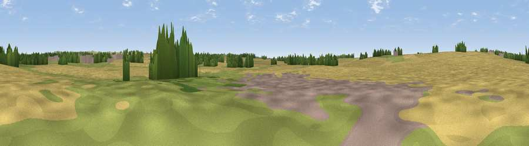

Viewpoint near Horncastle
#46106 in England · top 98% of its area beats it · near HorncastleThe view, rendered

A 360° render of this exact spot computed from the terrain model, tree cover and land cover — summer colours, afternoon light, calibrated against photographs of famous viewpoints. Real trees, hedges and buildings will differ in detail.
The panorama
Grey silhouette: terrain skyline in each direction (720 bearings, Earth curvature and refraction included). Dashed green: skyline with trees (+15 m) and buildings (+8 m) as obstacles. Blue strip: how far the ground is visible on each bearing.
Where the view opens
Wedge length = distance to the farthest visible ground on that bearing (vegetation-aware). Rings at 10, 25 and 50 km.
What fills the view
75% cropland · 17% grassland · 5% woodland · 3% built-up
Angular shares of the visible panorama (visual magnitude), not map area. Landscape diversity 0.34 (0–1 Shannon).
Key numbers
More beautiful places nearby
The staircase of upgrades: each row has a higher view potential than everything closer. Driving times are estimates from straight-line distance, calibrated against real road routing — check an actual route before setting out.
| Place | Direction | Drive | Score |
|---|---|---|---|
| Langton Hill | NNW · 2 km | ~5 min | 37.7 |
| Round Hills | ENE · 6 km | ~13 min | 51.1 |
| Hoe Hill | NE · 7 km | ~15 min | 54.8 |
| Viewpoint near Fulletby | NE · 8 km | ~16 min | 57.9 |
| Warden Hill | ENE · 11 km | ~20 min | 59.5 |
| Viewpoint near East Keal | ESE · 12 km | ~23 min | 66.0 |
| Viewpoint near Claxby | NNW · 31 km | ~48 min | 71.5 |
| Viewpoint near Woodhouse Eaves | SW · 91 km | ~116 min | 77.7 |
53.19414, -0.12192 · source: osm peak · position refined by local search. Computed location — check access rights before visiting.